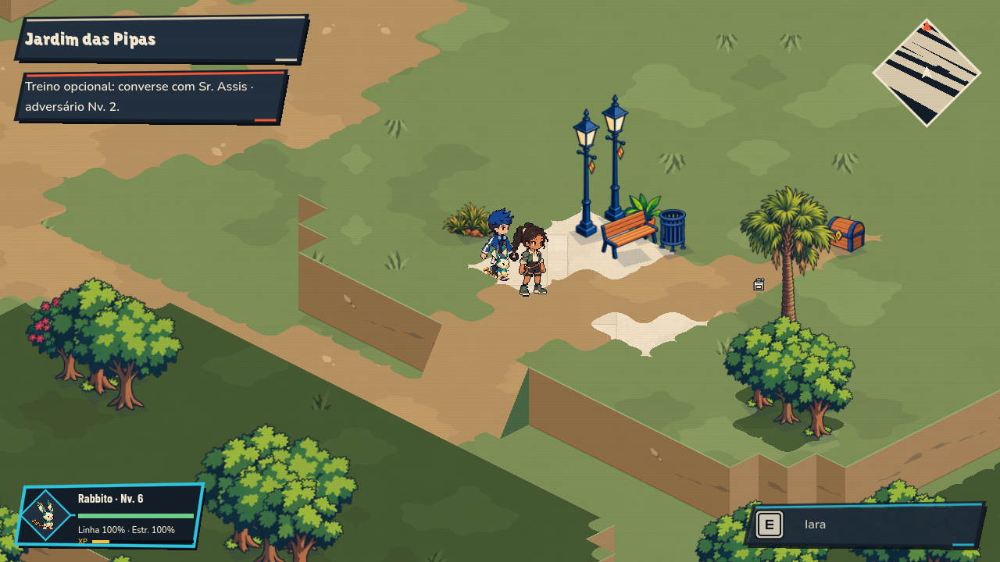
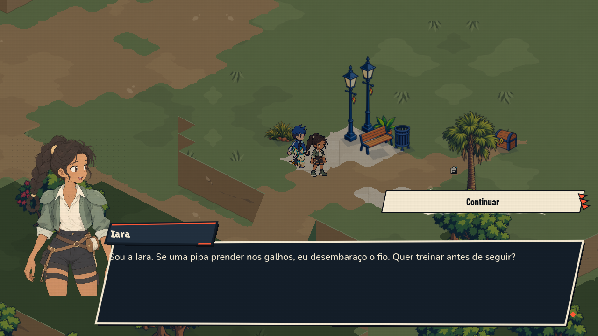
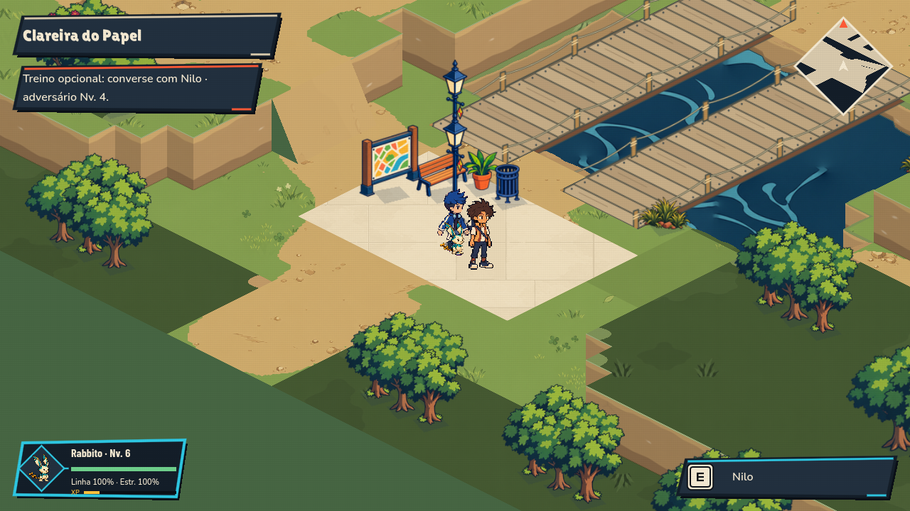
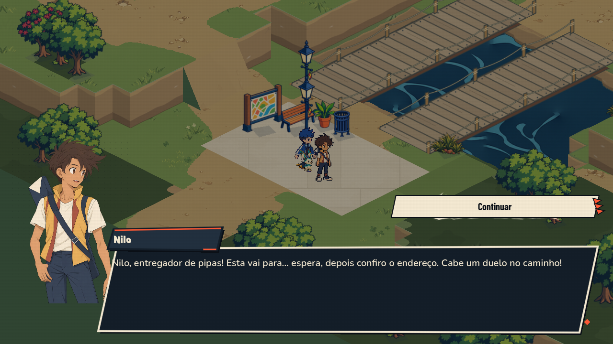
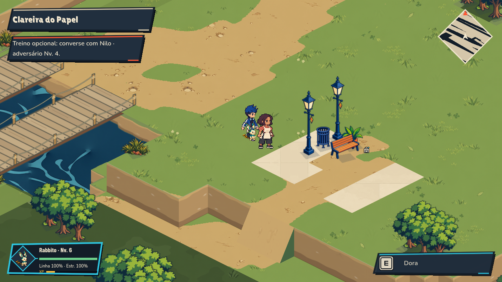
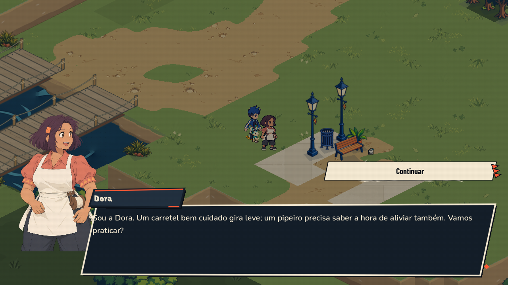
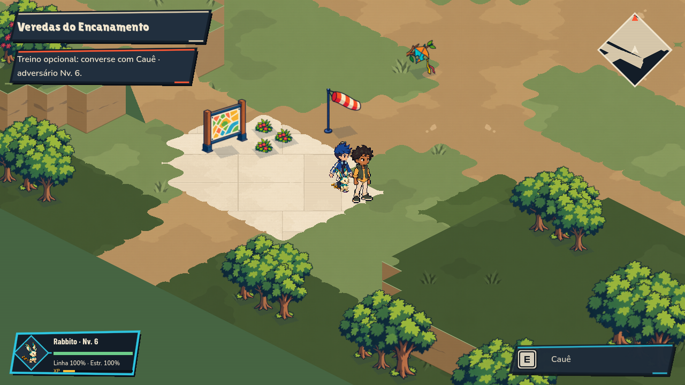
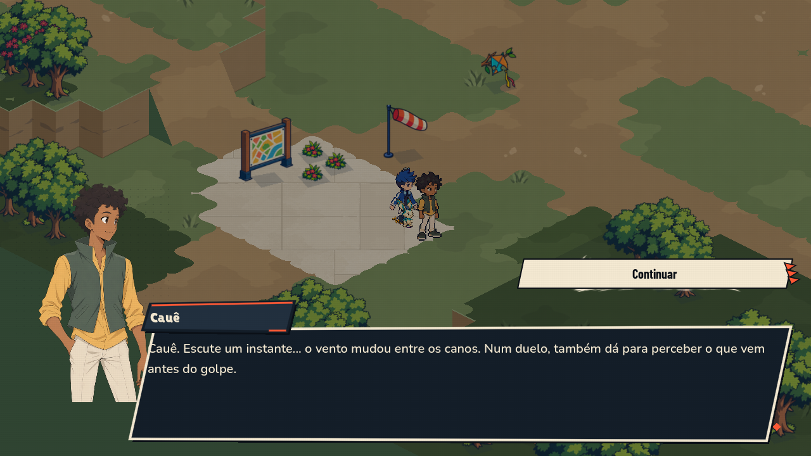
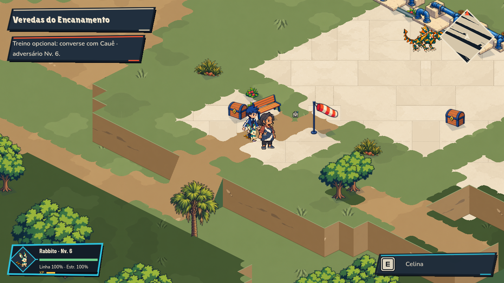
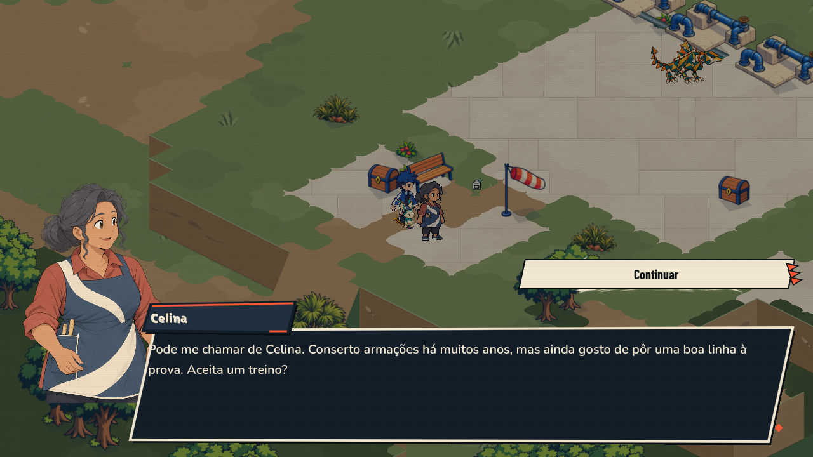

Novo elenco do Parque
Cinco personagens com sprites direcionais e retratos próprios. Capturas nativas 1280 × 720; sessão de teste isolada. Progresso e recibos antigos preservados.
Iara · Jardim


Nilo · Clareira


Dora · Clareira


Cauê · Veredas


Celina · Veredas

